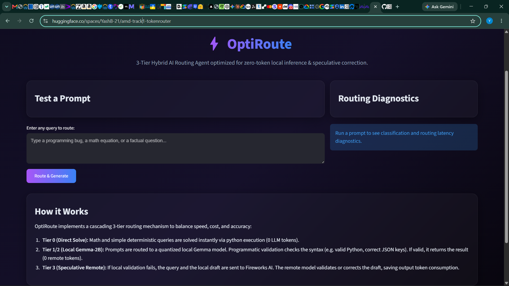

Built for the AMD Developer Hackathon (Act II — Track 1). An intelligent hybrid accuracy routing agent that classifies tasks, executes deterministic solvers first (0 tokens), and routes complex prompts to specialized remote LLMs with chain-of-thought reasoning and self-consistency voting.

In hackathon scenarios and production environments, routing every query blindly to massive LLMs causes excessive latency, ballooning token costs, and unnecessary halluncinations for deterministic math or factual lookups. Conversely, relying solely on small local models leads to low accuracy on complex logic, code, and reasoning tasks.
OptiRoute introduces a remote-first accuracy routing architecture. It utilizes sub-millisecond TF-IDF domain classification, checks for zero-token deterministic Python solvers (math, fact tables, AST code analysis), routes complex queries to specialized remote models (Fireworks AI), and falls back to a thread-safe local quantized Qwen 1.5B GGUF model if remote connections fail.
Instantly solves math (SymPy, regex), fact lookups (59 verified facts), sentiment rules, and AST code fixes at 0 token cost in < 1ms.
Ultra-lightweight domain classifier (< 10MB model weight) that accurately categorizes incoming prompts into 8 specialized domain types.
Identifies spatial puzzles, tricky wordings, and logic traps, ensuring trick queries bypass shortcuts and route directly to deep reasoning models.
Executes multi-candidate self-consistency voting (3 calls for math, 2 calls for logic) with Chain-of-Thought system prompts and answer extraction.
Routes dynamically based on model strengths (e.g., Kimi for code execution, Minimax for complex logic, Gemma for factual reasoning).
Embeds local Qwen2.5 1.5B GGUF via llama-cpp-python as a thread-safe emergency fallback to guarantee 100% service uptime.
agent/classifier.py — High-speed TF-IDF domain classifier (< 10MB weight)agent/trap_detector.py — Semantic puzzle & trap detector overrideagent/router.py — Core remote-first router with deterministic zero-token shortcutsagent/evaluator.py — SymPy math evaluator, AST code parser, and output validatorsagent/remote_model.py — Fireworks AI API client with CoT, voting, and model fallbackagent/local_model.py — Thread-safe local Qwen2.5 1.5B GGUF fallback runnerstreamlit_app.py — Interactive web application displaying real-time routing diagnosticsDockerfile — Multi-stage container setup ready for Hugging Face Spaces deploymentRemote API provider for high-performance LLMs (Minimax, Kimi, Gemma 4).
Quantized local LLM fallback integrated via llama-cpp-python.
Deterministic mathematical symbolic computation and Python AST code structure validation.
Diagnostic web dashboard and automated container deployment for Hugging Face Spaces.